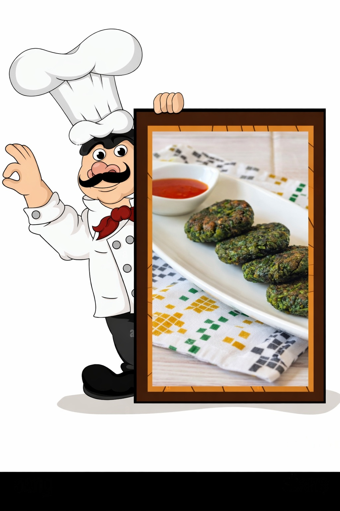

🥬 Palak Tikki
🥬 Palak Poha Tikki
🧾 Ingredients
Main Ingredients
- 🥬 Palak (spinach) – finely chopped
- 🍚 Poha (flattened rice) – washed and well drained
- 🥔 Boiled potato – mashed
- 🧅 Onion – finely chopped (optional)
- 🌶️ Green chilli – finely chopped
- 🫚 Ginger – grated (optional)
- 🧂 Salt – to taste
- 🌿 Cumin powder / chaat masala – to taste
Binders (Optional – only if needed)
- 🌾 Besan (gram flour) or
- 🍞 Breadcrumbs
Final Binding
- 🍋 ½ lemon – freshly squeezed

🍳 Method
- 🚿 Rinse poha briefly with water and drain completely. The poha should be soft but not soggy.
- 🔪 Finely chop the palak. If it releases excess water, lightly blanch and squeeze it dry.
- 🥣 In a mixing bowl, add poha, chopped palak, mashed potato, onion, green chilli, ginger, salt, and spices.
- 🍋 Add ½ lemon juice and mix everything well using your hands.
- 🌾 If the mixture feels loose or does not bind, add a small amount of besan or breadcrumbs only as required.
- 🖐️ Shape the mixture into small, flat round tikkis.
- 🍳 Heat a pan with a little oil and shallow-fry the tikkis on medium flame until golden and crisp on both sides.
🍽️ Serving
😋 Serve hot with green chutney, tomato ketchup, or alongside a cup of tea ☕.
🌿 Ideal as a healthy snack or light breakfast.